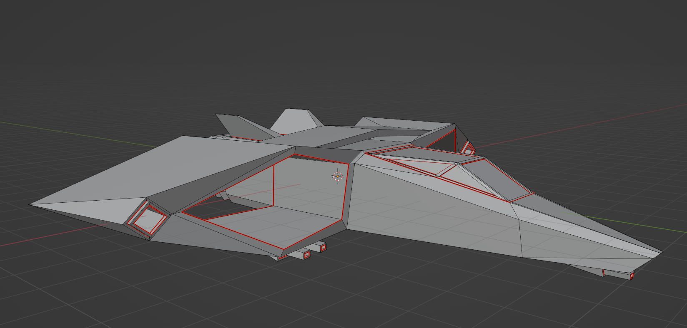
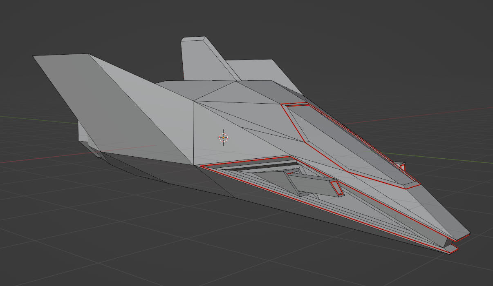
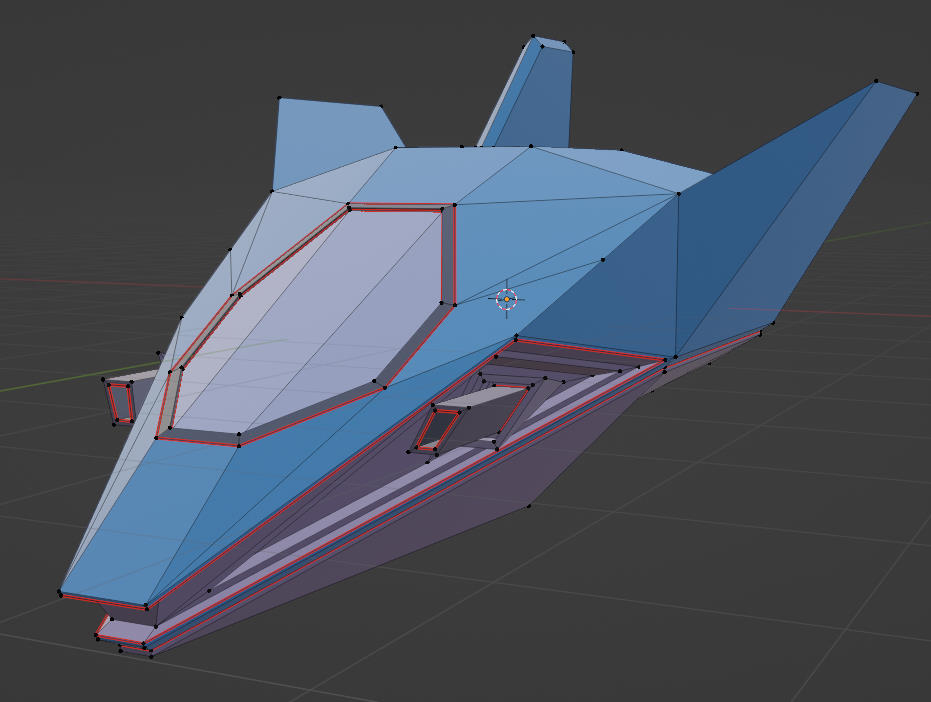
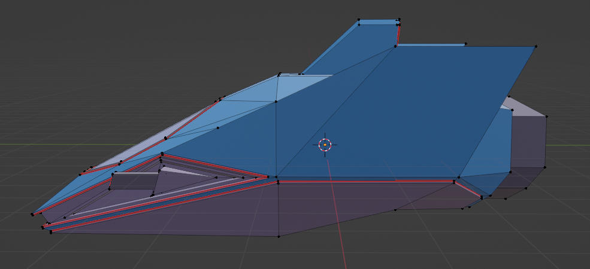
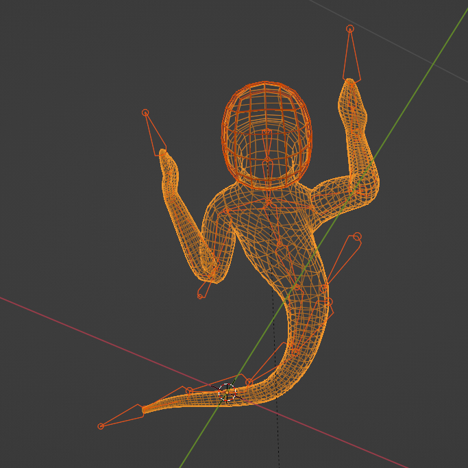
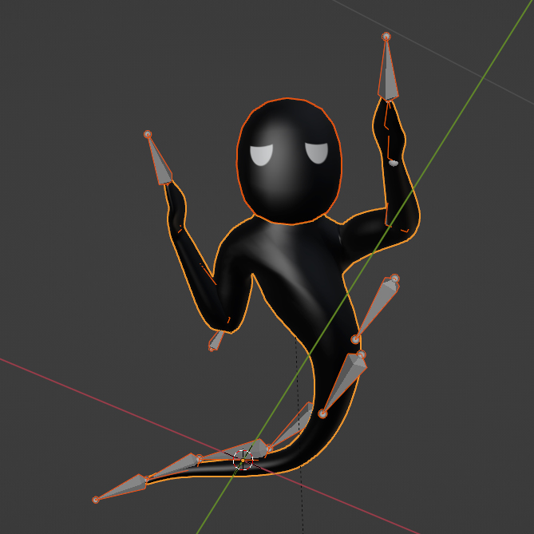
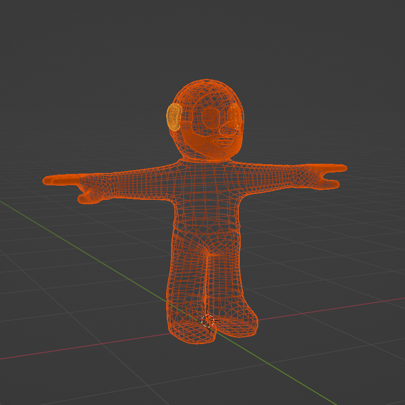
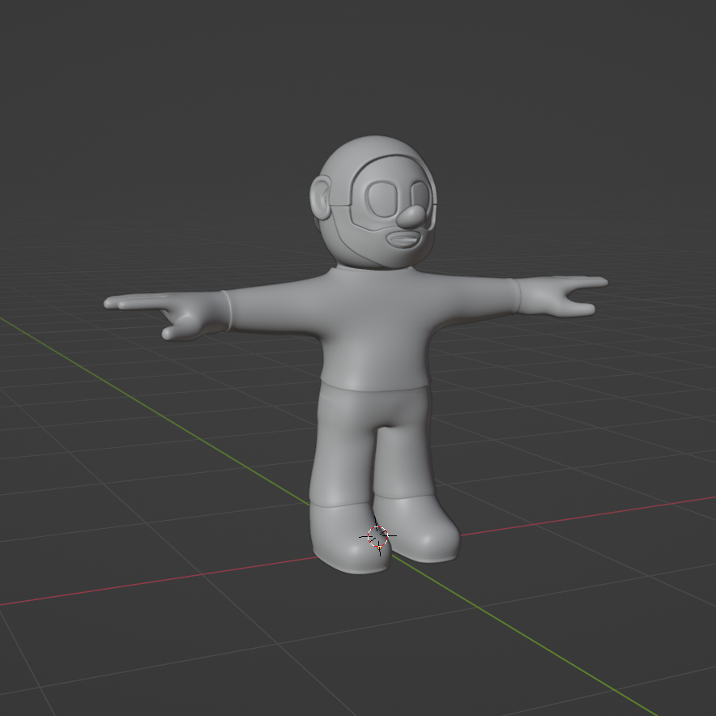
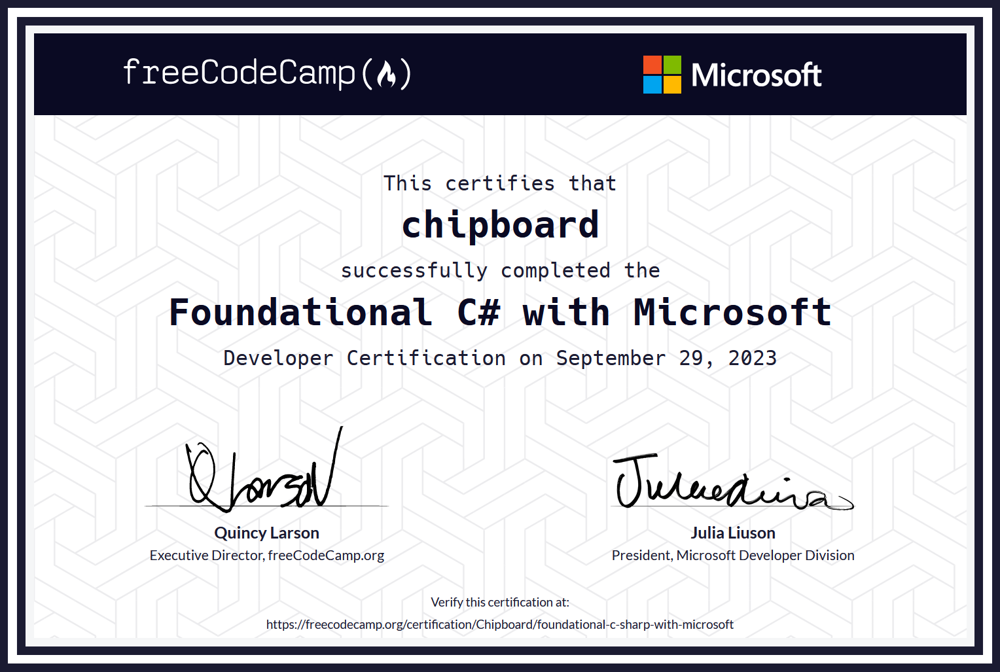

Volumetric rendering
Layered atmosphere, cloud lighting, self-shadowing, fog, and light transport experiments.
Programmer · Technical creator
Real-time graphics, simulation, physics, procedural tools, and experimental software—built by taking systems apart and finding a way through.
Featured systems
Graphics, simulation, audio, and engine projects organized around what was difficult—not around which language happened to be used.
Technical range
I learn systems by building ambitious things inside them—then keep digging until the result is usable, fast, and shippable.
Layered atmosphere, cloud lighting, self-shadowing, fog, and light transport experiments.
Geometry, assets, and world state assembled while the engine is running.
Interactive materials, vehicle coupling, simulation prototypes, and physical tools.
Post-processing, voxelization, projections, stylization, lighting, and screen-space effects.
Working around constraints, finding unconventional extension points, and wiring systems together.
Designing ambitious real-time effects around a strict frame-time budget.
Purpose-built controls, technical workflows, presets, and reusable systems.
Procedural approaches to generating responsive synthetic engine sound.
Public contributed projects
These credits were part of the original portfolio and remain here as first-class work: public contributions across C#, C++, and art.
Released projects
Small games and experiments that made it out of the lab and into players’ hands.
Prototype archive / 15 videos
Threaded voxels, cloth, buoyancy, sand, audio, procedural terrain, games, and tools. These are not polished case studies; they are evidence of ideas made tangible.
3D work / original gallery
The original modeling gallery, restored as a visual archive rather than reduced to a footnote.









Certificate archive
One certificate, alongside years of self-directed learning through shipped work, engine experiments, and difficult prototypes.
About
I’m a self-taught programmer and technical creator. I learn by choosing projects that are slightly unreasonable, taking systems apart, and staying with the problem until something tangible exists.
The result is a body of work spanning graphics research, engine experimentation, simulation, modding, procedural tools, games, and shipped software.
Have a difficult system?
I’m interested in game and engine development, graphics programming, simulation, technical tooling, contract work, and technically minded collaborations.
programmerrathey@gmail.com